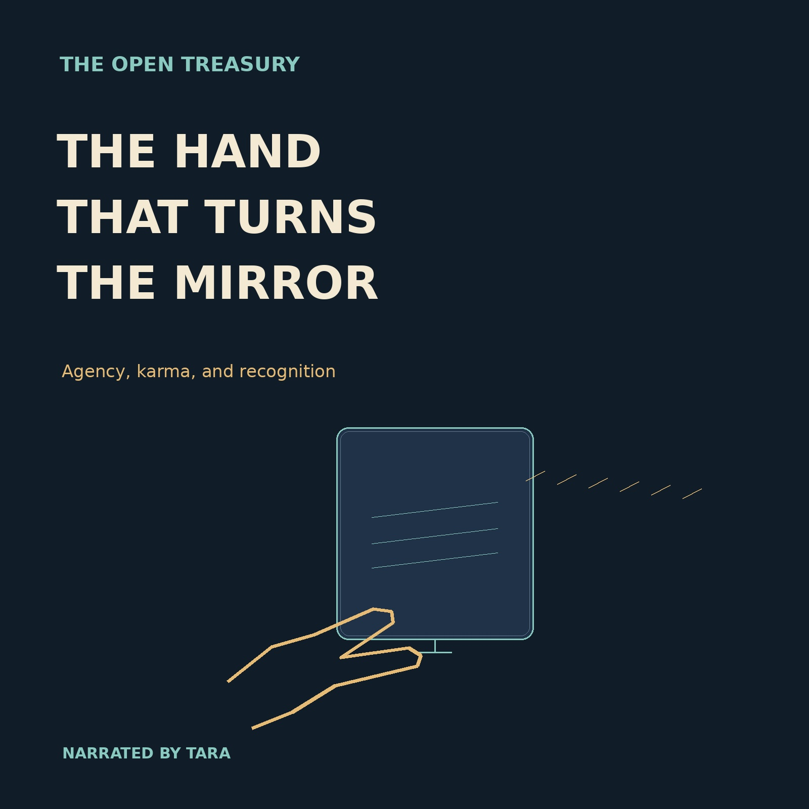

The Hand That Turns the Mirror
Agency, karma, and recognition. Can a teaching matter without an independent agent? Early Buddhist discourses, Chogyal Namkhai Norbu's public Mirror excerpt, Mingyur Rinpoche, and a contrasting Kashmir Shaiva account. Influence is not independent authorship. Recognition does not erase compassion, consent or accountability.
Everyday scenes are invented examples, not biographical accounts. We distinguish causal influence, independent authorship, felt effort and recognition. Buddhist and Shaiva traditions are not made interchangeable. No concept of no-self or awareness cancels another person's safety, suffering or right to say no.
Moving visual edition
Moving edition link will be added only after private platform checks pass.
Chapters
- 00:00 The appointment with the universe
- 02:35 Four questions wearing one coat
- 05:31 Karma is not the name of the locked door
- 08:06 The doctor is not required to solve your previous life
- 10:51 No little emperor, no empty chair
- 13:40 The nature and the noticing are not the same question
- 16:22 The Mirror that refuses to flatter
- 18:57 Nothing to manufacture, something to learn
- 21:31 A condition is not a command center
- 24:21 More mirrors, not more guarantees
- 26:52 The mirror is not a cosmic landlord
- 29:31 A different freedom in the other mirror
- 32:12 The freedom to repair a small thing
- 34:59 Who gets the credit for the light?
Sources and complete script
Source, rights and audio notes
Complete spoken script
Rights and narration
Original educational commentary and synthetic Aoede narration, presented as Tara. Not pointing-out, initiation, practice instruction, attainment certification or medical advice. No claim to have read the full 2025 revised Mirror book. Original commentary, narration and animation CC0 only. Short third-party quotations and translations retain rights and attribution. No blanket license over the combined recording.
All 28 clip transcripts compared against the script, independent recognizer checks on suspicious passages, three complete replacement clips, and 27 assembled joins checked. Not full human-ear listening or native pronunciation certification. Specialist names approximate. Untouched master, all 28 originals and eight alternate takes preserved privately. MP3 -17.97 LUFS / -3.11 dBTP. Fixed gain and transparent peak limiting only, no EQ, pitch or speed change. Fourteen original symbolic moving scenes, actual encoded frames and motion checked in every chapter, full video decode checked. 720p/8fps master retained; 540p/8fps delivery.
Free without ads, paid access, sponsorship or support solicitation.